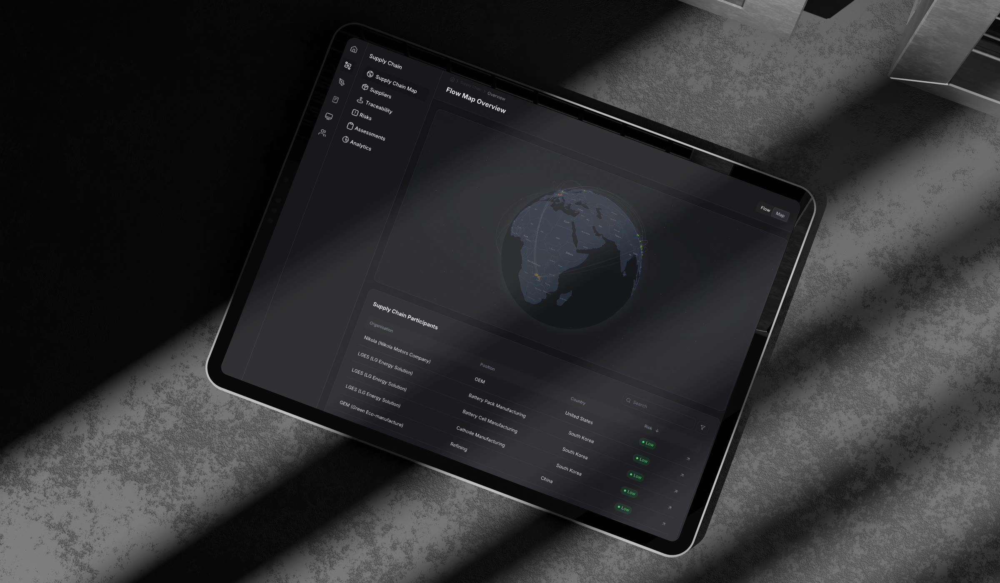
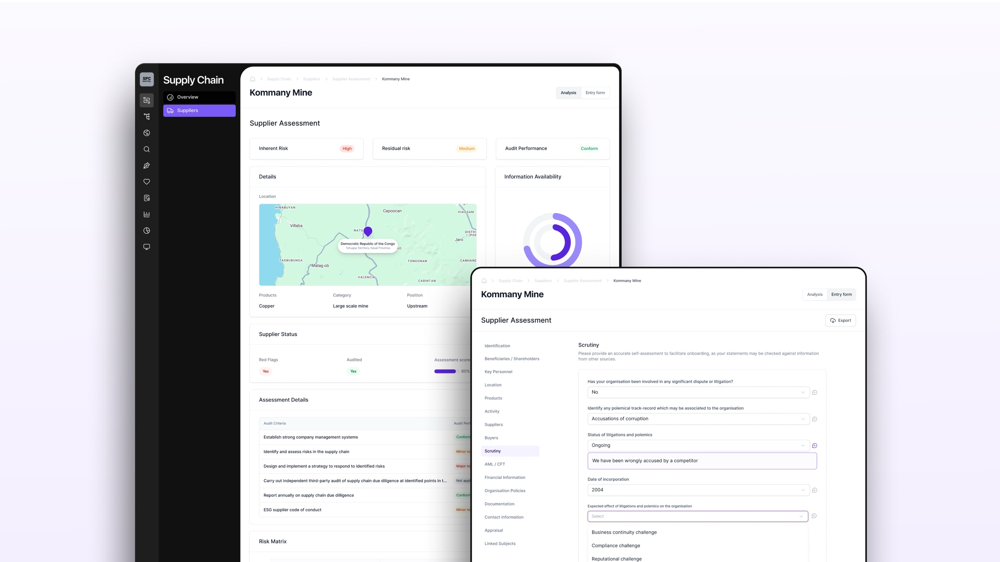
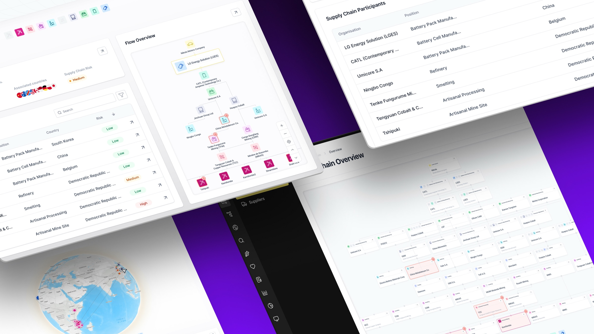

Due diligence was static, and the world wasn't.
Sourcing commodities like copper, cobalt and gold from high-risk regions demands meticulous due diligence — OECD Annex II, AML/CFT checks, watchlist screening, site audits, ESG scoring. Traditional approaches were static: a supplier filled in a form, an analyst scored it, and six months later the risk profile was already out of date.
Compliance teams juggled disconnected tools for financial verification, watchlist cross-referencing, audit tracking and ESG reporting — with no way to triangulate evidence across sources or surface red flags automatically.
Living supplier profiles, always up to date.
An integrated platform where each supplier is a continuously evolving record. Inherent risk, residual risk and audit performance are tracked as three independent dimensions. Triangulation from multiple sources — self-assessment, third-party audits, independent research — keeps every field current and traceable.
Red flags surface automatically when new information contradicts a supplier's record. Reports are generated on demand for any regulatory framework — OECD, LBMA, RMI — with full source-tracking baked in.

